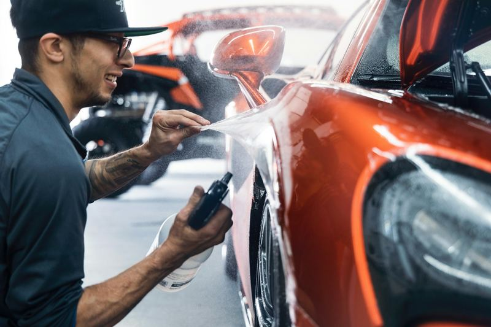
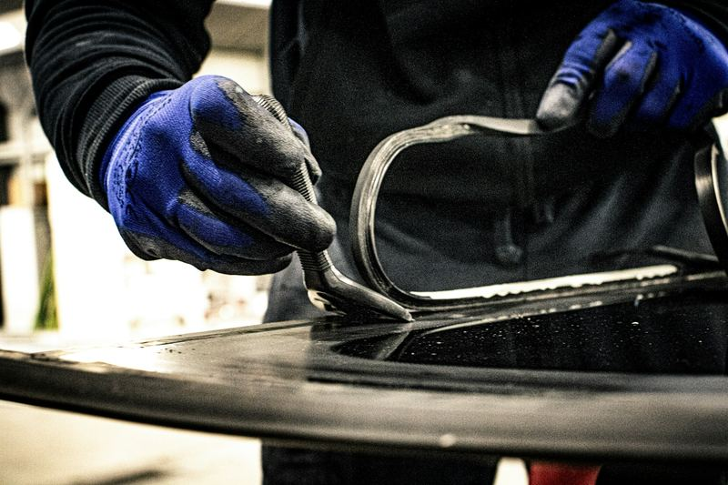

Autoservis v Krnově
Jaroslav Kaloč, Chářovská 13. Opravy aut a karoserií, diagnostika BOSCH, odtahová služba, klimatizace, autoskla, tažná zařízení a autoelektronika.
Po–čt 8–14

Jaký řidičák na vozík?
Zadejte hmotnosti z technického průkazu. Řekneme, jestli Vám stačí béčko.
Co u nás uděláme
Od diagnostiky po plech, od odtahu po tažné.
Opravy a karoserie
Mechanické opravy a opravy karoserie.

Diagnostika BOSCH
Diagnostika motorů a řídicích jednotek.

Odtahová služba
Odtah nepojízdného auta do servisu.

Servis klimatizací
Plnění, kontrola a opravy klimatizace.

Montáž autoskel
Výměna čelních a dalších skel.

Tažná a autoelektronika
Tažná zařízení, zabezpečení a autoelektronika.
5,0 ze 2 hodnocení
„Příjemné vystupování a profesionální přístup k práci pana Jaroslava Kaloče. Mohu jen vřele doporučit.“
zákazník na Firmy.cz
Rady z praxe
Všechny články- Adresa
- Chářovská 923/13, Krnov
- Otevřeno
- po–čt 8–14
- Odtah
- nepojízdné auto přivezeme